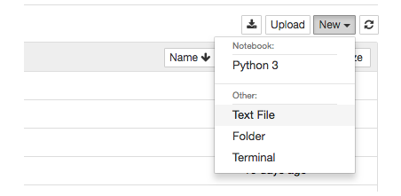
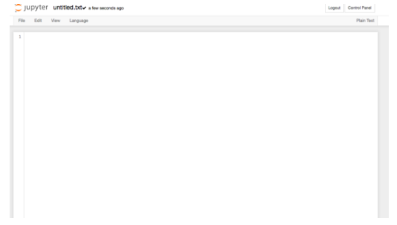
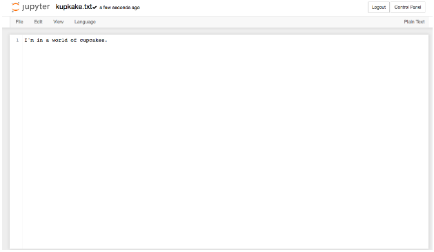
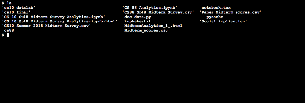
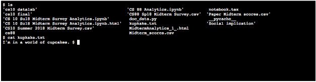

Lab 0: Community Building + Setup
Due at 9:00pm on 01/27/2019.
Starter Files
Download lab00.zip. Inside the archive, you will find starter files for the questions in this lab, along with a copy of the OK autograder.
Submission
By the end of this lab, you should have submitted the lab with python3 ok --submit. You may submit more than once before the deadline; only the final submission will be graded. Check that you have successfully submitted your code on okpy.org. See this article for more instructions on okpy and submitting assignments.
Please ignore the above for this lab.
Community Building Exercise
At the beginning of class, you will be participating in several activities that introduce you to the community of CS 88—your TA, your lab assistants, and most importantly, your fellow classmates.
Set-up for Class
In c8 you are doing all your development in the cloud on data8.berkeley.edu, but we will be using your personal computer for cs88. If you are using the instructional
machine in the lab you can ignore this section. We would like to be able to use the
datascience module in cs88 as well, to make the most of what you learn in c8 and
vice versa.
In c8, you mainly work in a python notebook: you type a piece of code into a cell, run the cell, and voila, the output is magically displayed. Furthermore, you can type text in addition to code in a python notebook; all the titles, subtitles, and instructions are text. However, more often in the real world you would be using a combination of terminal and text editor to run your program. And that’s what we will be doing in this class. All your code goes on to the text editor, and you run the code using Python on the terminal.
Let’s dive into how it works.
- To access Jupyter, open http://datahub.berkeley.edu (do this in a new tab or window) that you are using for Data 8 using your Berkeley email.
- If you see the
My Serverbutton, click on it.
Terminal
Terminal is a tool for you to interact with your folders and files. To open a terminal in datahub, click on “new” in the upper-right hand corner, and click on terminal.

When you open a terminal in datahub, it looks something like this:

You start off in something called your home directory.
Your TA will now demonstrate for you how to use the terminal. By the end, you should be able to answer these questions:
- 1.) What is a directory? A file?
- 2.) What does it mean by current directory?
- 3.) What are some basic commands I can use in terminal?
The most common terminal commands are as follows:
- ls - lists out all the files and directories in the current directory
- cd “folder name” - cd stands for “change directory”. cd “folder name” gets you into the directory with the folder name, provided the folder is inside your current directory
- cd.. - exit out to the previous directory
- cd - exits out to home directory
- mkdir - “make directory”, or create a folder
- touch - make a file
- clear - clear previous commands to make terminal look cleaner
All macs automatically come with a terminal. Open it up and play around with it. It looks something like this. You should see a tilde sign (~), which means that you are in your home directory:

If you are using Window, please follow the instructions to download git bash here:
Head to this website and click the windows download link.
You should be able to install Git Bash with most of the default configuration options, with one exception. In the Configuring the terminal emulator to use with Git Bash step, select the second option: Use Windows' default console window.

To do:
- Make a directory called "cs88"
- Now
cdinto that directory, and make 3 more directories: "labs", "hw", "projects"
Files and Text Editors
A file is something that stores information. There are different types of file, signified by their extension—the part of the file name after a dot (.). The most common types you interact with include .docx, .ppt, .txt, etc. What other types of file can you think of?
A text editor is a program that allows you to edit and write a range of different types of files, especially files with programing languages. In this class, you will be writing a lot of “.py” files, or Python files. In Jupyter hub, you can do so by opening up text file.

When you open it up, it looks something like this:

Right now, you can see that it’s titled “untitled.txt”. The .txt extension tells you that it’s a text file. Try changing the title by clicking on the title text directory, and type something in the file. For example:

Remember to save the file by clicking on File, then save. (Try running it without saving the file and see what happens.) Now let’s see how we can use the terminal to interact with this file.
Open up the terminal and type in ls:

ls lists out all the directories and files in my current directory, which is also the home directory. In the second column amidst all the other files and directory, you see “kupkake.txt”
Now type in cat “text name”. This will display the file content:

Woah. Cool, right?
Now, instead of using datahub, let’s download a text editor to our local computers. There are many options, but we suggest either sublime or atom.
Python
A file with Python code ends with “.py”. In datahub, you don’t need to worry about downloading Python in order to run Python code, or a.k.a execute the code written on these .py files. However, to run Python code on your local computers, you would need to download Python.
In this class, we run the version of Python that is 3.5 or higher. To download Python for Mac, follow this link: https://www.python.org/downloads/
To install python on windows, head to this site and click on the latest release, 3.7.0
When installing, make sure to check the "Add Python 3.6 to PATH" box, which will allow you to execute the python command from your terminal.

Congratulations on finishing your first lab! And welcome to CS 88.